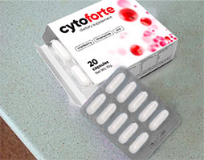

Dziewczyny, SOS! W zeszłym tygodniu długo spacerowałam z synem, zasypia tylko na dworzu w wózku, no i widocznie przeziębiłam nogi w trampkach. Efekt - zapalenie. Nie mogę się go pozbyć już trzy dni, boli, piecze, latam do łazienki co 5 minut, padam ze zmęczenia. Kto miał z tym do czynienia, podpowiedzcie czym się leczłyście, co pomogło. Nadzieja tylko w was!

Jak ja cię rozumiem! Ja miałam zapalenie z powodu słabej odporności po ciąży. Zawsze gdy robi się chłodno - proszę bardzo! Czym ja się nie leczyłam, tabletki dają tymczasowy efekt i ja ich tyle wypilam, że zaczęły się problemy z żołądkiem. Potem przeszłam na naturalne środki. Ze wszystkiego, co próbowałam zdecydowanie najlepsze to .
To nie są śmierdzące zioła, których nie da się pić, tylko kapsułki. W składzie wszelkie możliwe witaminy, cynk, ekstrakt z rumianku i żurawiny. Czytałam, że te składniki bardzo dobrze usuwają zapalenie i ból.
W sumie przyjmowałam 10 dni 2 razy dziennie. Symptomy mijają już następnego dnia, potem łagodzi się proces zapalny. Przez tydzień nie rozumiałam co to znaczy zapalenie pęcherza. Brałam kurację, żeby już mieć pewność. I proszę, już 2 lata nie miałam tej bolączki! Przeczytajcie jeszcze tutaj dokladnie o , tam wszystko jest opisane, jak działa itd. Powodzenia!

Mnie mama gotowała jakieś zioła, ale z nimi też trzeba uważać, ja miałam wysypkę, gdy za dużo wypiłam.
ja też się męczę z tym zapaleniem. przez infekcję sie rozwinął. raz jest spokój, a raz jak dopadnie! posłucham co tu radzą

Ja też pozbyłam się zapalenia pęcharze przy pomocy . Polecił mi to lekarz. Dzewczyny, nie chcę zapeszyć, ale już od pól roku nie miałam tej zarazy.

Chronić nogi przed wychłodzeniem obowiązkowo. Jeszcze krew do badań oddać. A w ogóle też jestem za naturalnymi środkami, chemia tylko truje organizm.

wiele osób w ogóle nie rozumie czym jest zapalenie pęcherza i zwyczajnie zagłuszają ból i nieprzyjemne doznania tabletkami. A to proces zapalny, który może stać się przewlekły, (jak u mojej znajomej). Także w żadnym wypadku nie ignorujcie tematu.

mam chroniczne zapalenie pęcherza, myślę, że już nie da się go wyleczyć, swego czasu tak przechodziłam... teraz staram się dbać o siebie, nigdy się nie wyziębiać.

o czym ty mowisz, można to wyleczyć, i to bez antybiotyków. Moja mam męczyła się ponad 10 lat, nawet lekarze rozkładali ręce, zamówiłam jej przez internet . Początkowo sprzeciwiała się, mówiła, ze to nie pomoże. A pomogło! I tak już 3 lata ma spokój. niedawno była u ginekologa, badania sa o wiele lepsze, szkodliwych bakterii już nie ma. ja bym to wszystkim kobietom polecała stosować w ramach profilaktyki.

Z tego co wiem jego tylko w internecie na oficjalnej stronie można kupić. Zamawiałam dziś, przychodzi szybko w 2-3 dni, a w aptekach mogą być podróbki, już o tym czytałam. Także lepiej zamawiać bezpośrednio u producenta.

Wyleczyłam się jakimiś kapsułkami, teraz nie pamiętam nazwy. pomagają dobrze, ale potem trzeba odbudować mikroflorę jelit, bo kapsuły są silniejsze.
Jak tylko się rozwiodłam z mężem, zapalenie zniknęło. Od razu wiedziałam, że to wszystko jego wina.

Ja też miałam zapalenie pęcherza. Podczas leczenia dostałam następujące porady. Aby złagodzić ból podczas ostregu okresu można grzać się termoforem (wkładasz między nogi), ale tylko w przypadku zapalenia bez krwawień. Pic więcej płynów (żeby się częściej wypróżniać), nie jeść ostrego i unikać kawy. W czasie zaostrzenia pelna wstrzemięźliwość seksualna (to było dla mnie i męża najtrudniejsze). Objawy stopniowo przechodzą, ale nie wiem czy na długo. Póki co miesiąc mam spokój.

Dzięki Bogu nigdy nie miałam ataku i mam nadzieję, że nie będę mieć, ubieram się zawsze stosownie do pogody, zimą trzy pary skarpet, dwie spodni itd. męczą sie te, które biegają w koronkach w -20.

widać, że pani nie ma pojęcia czym jest zapalenie pęcherza, może rozwinąć się nawet od nieprawidlowej diety, fizjologii, ułożenia organów. co mają do tego rajstopy? chyba że pani myśli, że my wszystkie tu jakieś nienormalne jesteśmy i latamy nago zimą?

Wszyscy lekarze zalecają tylko antybiotyki, nic więcej nie mają w zanadrzu. Ale to nie rozwiązuje problemu. Po tygodniu-dwóch wszystko zaczyna się od nowa. Moja znajoma przeszła trzy kuracje antybiotykiem. Jak tylko skończy, za tydzień to samo. Idzie do lekarza, a ten znowu przepisuje antybiotyk, inny, silniejszy. I tak w kółko. W końcu mnie posłuchała i zamówila i po 3 dniach wszystko przeszło zupełnie, a poprawiło się prawie od razu. I nie trzeba się truć. Ale ludzie nie od razu to rozumieją. Szkoda.


Mam taki problem... Zauważyłam zaostrzenie dzień po seksie lub po spożyciu alkoholu w dowolnych, nawet najmniejszych dawkach

Trzeba dużo pić. Sok z żurawiny litrami pić i jeść dużo jogurtu. Jeszcze brać ciepłe kąpiele z sody, zaparzać herbatę z rumianku i pić 4 razy dziennie. Na jakiś czas zapomnicie i nieprzyjemnych doznaniach.

A po co na jakiś czas jeśli można całkiem się pozbyć? Wiecie czemu warto pić sok z żurawiny? Bo ma w składzie aminokwasy, które zabijają bakterie, powodujące zapalenie. Dlatego wyciąg z żurawiny to główny składnik A cynk wzmacnia działanie i odporność, żeby nie było nawrotów. Dlatego nie zajmujcie się pierdołami tylko bierzcie lekarstwo, które naprawdę pomaga.